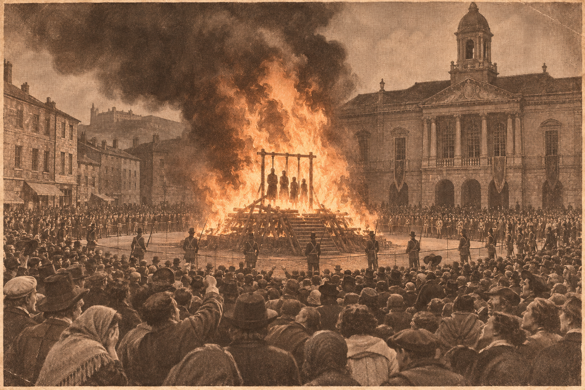
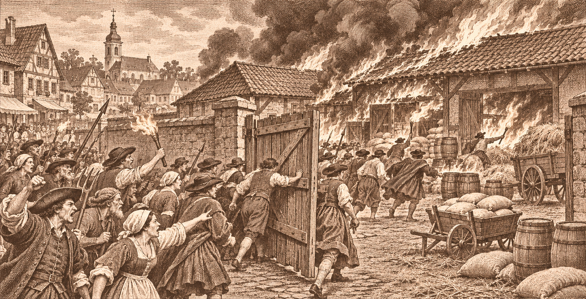
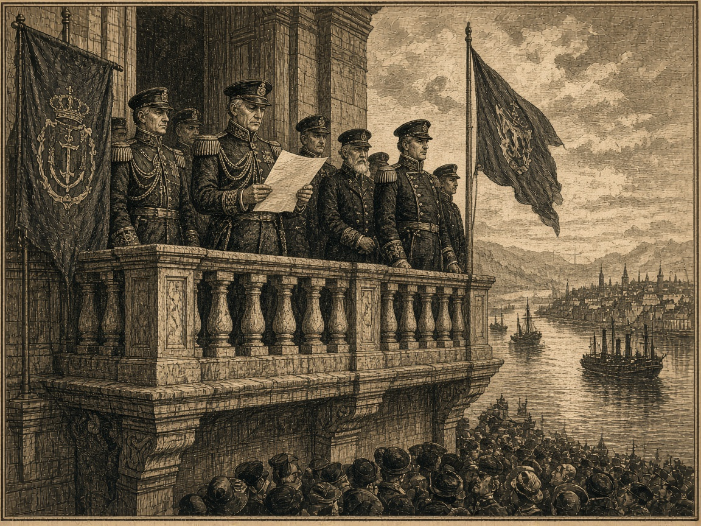

蒼森辺境伯、一族郎党が火あぶりに
食料ゼロ、暴動七か所 黒潮との戦争と外からの軍事介入が重なるなか、一族は広場で処刑された

【総合部】第213期、蒼森辺境伯領の首都ブロースコーグ（20,10）で、辺境伯と一族郎党が民衆に火あぶりにされた。食料はゼロ、公報が記録した暴動は七か所。住民は隣接するカペレナ王国兵站基地（21,11）にも押し寄せ、基地を壊滅させた。同じ期、カペレナは蒼森（19,10）を整地し、同領へ宣戦布告。開戦予定は第218期で、政府は「特別軍事作戦の発動」を表明した。黒潮との戦争も続くなか、領主を失った蒼森では配給と治安を誰が担うのか。詳報は2、3面。


翠澄がオリョルッル領へ 藍岬はカペレナ戦で損害9,600
翠湖自治州の現代都市・翠澄（45,37）はオリョルッル王国の占領下となった。公報損害は翠湖八千三百人、オリョルッル四千四百人。藍岬共和国連邦とカペレナの戦線では藍岬九千六百人、カペレナ千三百人。金野となのですの戦線では六千百人／七百人、泰平とテキスタンは千人／二千人。チェスから泰平へ四万五千二百人が到着した。火災十七件、人口減六万五千四百人。国特集は9面の白波王国。